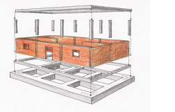

Masonry, Confined
Masonry construction where masonry walls are first laid and then reinforced columns and beams are cast. In this type of construction the concrete bonds to the masonry and the small-size columns and beams (called tie-columns and tie-beams) confine the masonry wall panels. This material type is associated with the Wall lateral load-resisting system since the masonry bears gravity and lateral loads and the slender columns and beams do not constitute rigid frames but rather function as confining members. Construction where columns and beams are constructed before the masonry walls are laid is classified as an Infilled Frame or an Infilled Flat Slab/plate.


Confined masonry construction (T. Shcacher)

Confined masonry wall under construction (S. Brzev)